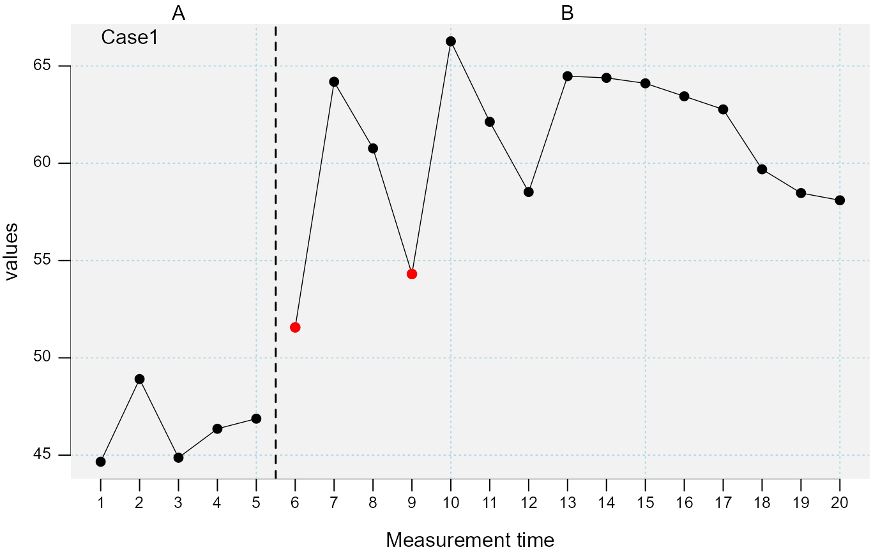
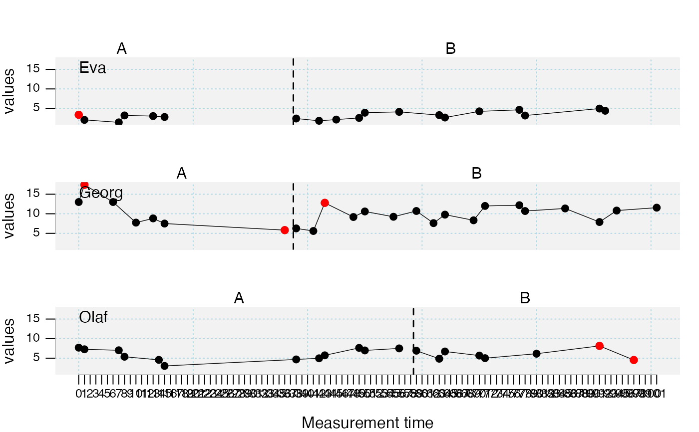

Identifies and drops outliers within a single-case data frame (scdf).
outlier(data, dvar, pvar, mvar, criteria = c("MAD", "3.5")) outlierSC(...)
| data | A single-case data frame. See |
|---|---|
| dvar | Character string with the name of the dependent variable. Defaults to the attributes in the scdf file. |
| pvar | Character string with the name of the phase variable. Defaults to the attributes in the scdf file. |
| mvar | Character string with the name of the measurement time variable. Defaults to the attributes in the scdf file. |
| criteria | Specifies the criteria for outlier identification. Set
|
| ... | Further arguments passed to the function. |
A single-case data frame with substituted outliers.
A list with the number of dropped data points for each single-case.
A list with the measurement-times of dropped
data points for each single-case (values are based on the mt variable
of each single-case data frame).
A list with a matrix for each case with values for the upper and lower boundaries based on the standard deviation.
A list with a matrix for each single-case with values for the upper and lower boundaries based on the confidence interval.
A list of Cook's Distances for each measurement of each single-case.
Criteria used for outlier analysis.
Number of single-cases.
Case identifier.
Other data manipulation functions:
as.data.frame.scdf(),
fill_missing(),
ranks(),
shift(),
smooth_cases(),
standardize(),
truncate_phase()
Juergen Wilbert
## Identify outliers using 1.5 standard deviations as criterion susanne <- rSC(level = 1.0) res_outlier <- outlier(susanne, criteria = c("SD", 1.5)) plot(susanne, marks = res_outlier)## Identify outliers in the original data from Grosche (2011) using Cook's Distance ## greater than 4/n as criterion res_outlier <- outlier(Grosche2011, criteria = c("Cook", "4/n")) plot(Grosche2011, marks = res_outlier)